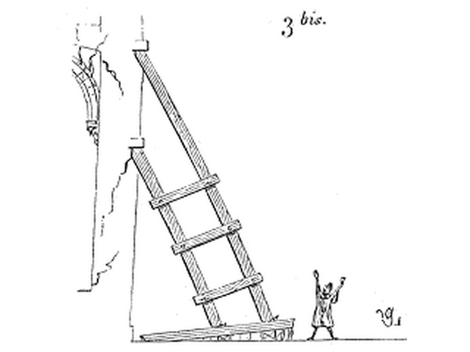
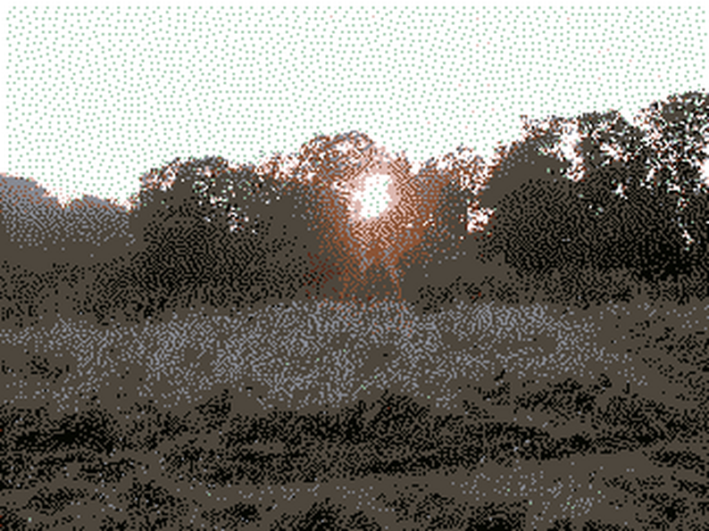

Go back to the Productive Radiation homepage.

a game by jay.
This is a project i've been working on in my free time. It's far from finished but I’m planning on releasing it sometime in late 2022-2023.
An RPG Maker 2000 game by jayaks. Based mostly around puzzle-solving, with RPG elements.
GALLERY
 GAMEPAGES